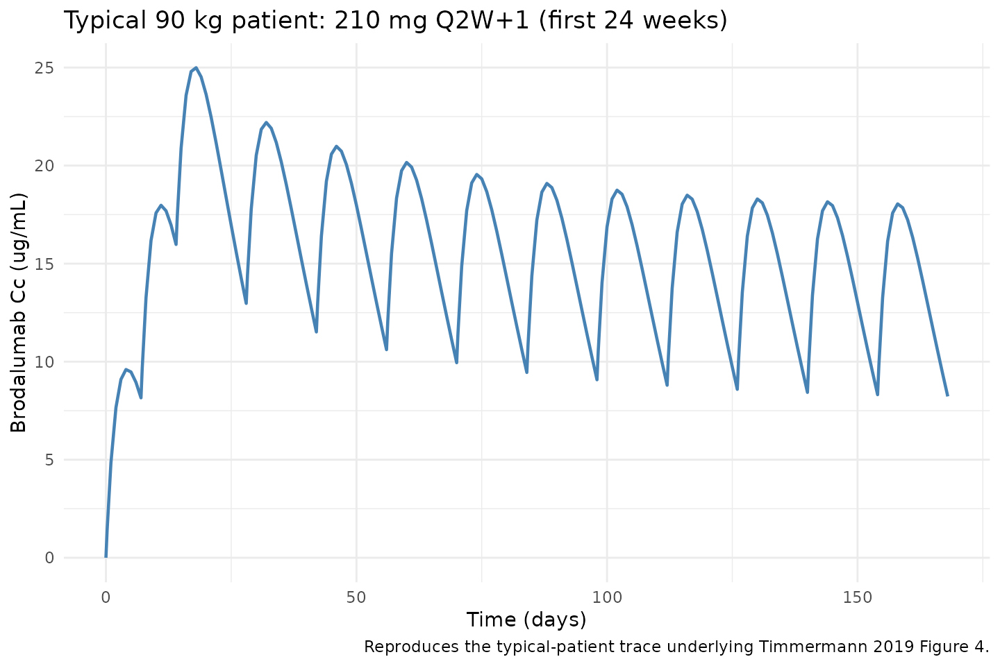
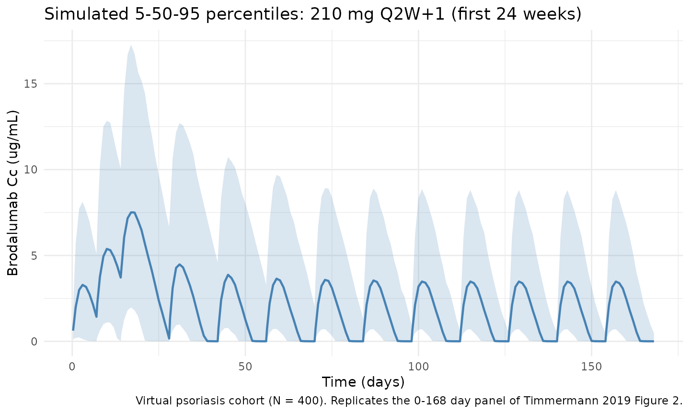
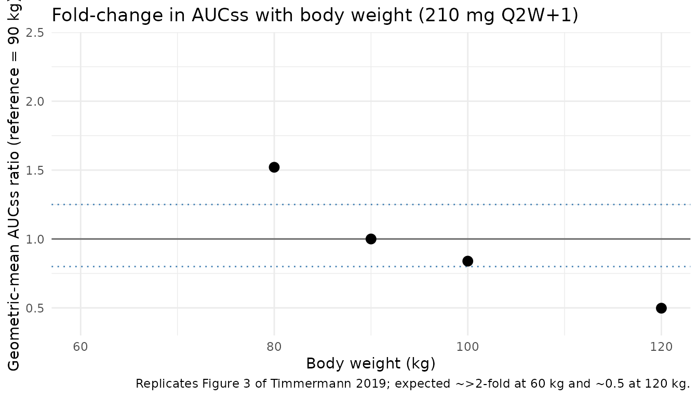

Timmermann_2019_brodalumab
Source:vignettes/articles/Timmermann_2019_brodalumab.Rmd
Timmermann_2019_brodalumab.RmdModel and source
- Citation: Timmermann S, Hall A. Population pharmacokinetics of brodalumab in patients with moderate to severe plaque psoriasis. Basic Clin Pharmacol Toxicol. 2019;125(1):16-25. doi:10.1111/bcpt.13202
- Description: Two-compartment population PK model for brodalumab in adults with moderate-to-severe plaque psoriasis (Timmermann 2019), with first-order SC absorption, fixed bioavailability, and combined linear plus Michaelis-Menten (target-mediated) elimination from the central compartment.
- Article: Basic Clin Pharmacol Toxicol. 2019;125(1):16-25 (open access via PMC6850607)
Population
Timmermann 2019 pooled six clinical studies (2 phase I, 1 phase IIb with open-label extension, 3 phase III) into a population PK analysis set of 622 adults with moderate-to-severe plaque psoriasis. The dataset included 7725 quantifiable and 2508 below-LLOQ brodalumab concentrations following IV or SC single / multiple doses of 70-700 mg administered over 1-2015 days. The approved regimen is 210 mg SC at weeks 0, 1, 2 followed by 210 mg every 2 weeks (“Q2W+1”).
Baseline demographics from Table 2: median age 46 years (range 18-75), 33% female (417 of 622 were male), median body weight 87.8 kg (range 43-186), 93% Caucasian (1% Asian, 1% Black, 5% other per the corresponding Table 2 breakdown in the source), median BMI 29.6 kg/m^2 (range 16.7-66.1), median baseline PASI 17.7 (range 8.8-60.6). Healthy volunteers were deliberately excluded because IL-17RA expression (and therefore target-mediated disposition) differs between diseased and healthy populations. Race was not tested as a covariate because 93% of patients were Caucasian; anti-drug-antibody status was not tested due to low and transient positivity.
The same information is available programmatically via
readModelDb("Timmermann_2019_brodalumab")$population.
Source trace
Every structural parameter, covariate effect, IIV element, and
residual-error term below is taken from Timmermann 2019 Table 3. The
reference patient is a 90 kg adult with plaque psoriasis; all
body-weight normalizations use WT / 90.
| Equation / parameter | Value | Source location |
|---|---|---|
lka (Ka) |
log(0.300) 1/day |
Table 3, Ka row |
lvc (V1) |
log(4.68) L |
Table 3, V1 row |
lcl (CL) |
log(0.155) L/day |
Table 3, CL row |
lvm (Vmax) |
log(6.07) mg/day |
Table 3, Vmax row |
lq (Q) |
log(0.328) L/day |
Table 3, Q row |
lvp (V2) |
log(2.41) L |
Table 3, V2 row |
km (Km, fixed) |
0.02 ug/mL |
Table 3, Km row (fixed) |
lfdepot (F, fixed) |
log(0.548) |
Table 3, F row (fixed at 54.8%) |
e_wt_cl (WT/90 exponent on CL) |
0.767 |
Table 3: Power of weight on CL |
e_wt_vc (WT/90 exponent on V1) |
0.938 |
Table 3: Power of weight on V1 |
e_wt_vm (WT/90 exponent on Vmax) |
0.769 |
Table 3: Power of weight on Vmax |
var(etalka) |
log(0.626^2 + 1) = 0.33065 |
Table 3: Ka IIV 62.6% CV |
var(etalcl) |
log(0.575^2 + 1) = 0.28565 |
Table 3: CL IIV 57.5% CV |
var(etalvc) |
log(0.255^2 + 1) = 0.06300 |
Table 3: V1 IIV 25.5% CV |
cov(etalcl, etalvc) |
0.75 * sqrt(0.28565 * 0.06300) = 0.10061 |
Table 3: CL-V1 correlation 0.75 |
var(etalvm) |
log(0.247^2 + 1) = 0.05922 |
Table 3: Vmax IIV 24.7% CV |
var(etalq) |
log(0.910^2 + 1) = 0.60328 |
Table 3: Q IIV 91% CV |
var(etalvp) |
log(1.890^2 + 1) = 1.51997 |
Table 3: V2 IIV 189% CV |
CcpropSd |
0.355 (fraction) |
Table 3: Proportional residual error 35.5% CV |
CcaddSd |
3.00 ug/mL |
Table 3: Additive residual error (SD, per footnote) |
| Structure (2-cmt + first-order SC absorption + parallel linear + MM elimination) | n/a | Section 2.3 Methods and ODE description |
Parameterization notes
-
Parallel linear + Michaelis-Menten clearance.
Timmermann 2019 parameterizes elimination from the central compartment
as a sum of first-order linear clearance (
CL) and saturable Michaelis-Menten elimination with parametersVmax(mg/day) andKm(ug/mL). Explicit ODEs are used rather thanlinCmt()because of the non-linear term. -
Separate bioavailability. Because phase I included
IV (700 mg bolus) and SC arms, the authors identified the SC
bioavailability F separately and fixed it at 54.8% before the covariate
analysis. In the nlmixr2 implementation,
f(depot) <- exp(lfdepot)applies F only to doses entering thedepotcompartment; IV doses that the user places directly incentralare not scaled. - Fixed Km. Km was fixed at 0.02 ug/mL, a value carried over from the previous analysis (Endres 2014). The authors note that Km is effectively an artificial constant because the non-linear term saturates well below 1 ug/mL and a zero-order elimination would describe the data equivalently but allow negative concentrations; Km was kept for pharmacological plausibility.
-
CV% to log-normal variance. Timmermann 2019 Table 3
reports between-subject variability as CV% on the linear-parameter
scale, with multiplicative exponential (log-normal) random effects per
Section 2.3. The nlmixr2 internal variance is therefore
omega^2 = log(CV^2 + 1). -
CL-V1 correlation. Table 3 reports a 0.75
correlation between the etas on CL and V1, encoded as a 2x2 block in
ini()with the off-diagonal computed as the correlation timessqrt(var_cl * var_vc). -
Combined residual error. Table 3 footnote states
“Proportional and additive errors are given as %CV and standard
deviation.”
CcpropSd = 0.355(fraction) andCcaddSd = 3.00ug/mL are used directly.
Virtual cohort
The simulations below use a virtual cohort whose body-weight distribution approximates Timmermann 2019 Table 2. No subject-level observed data were released with the paper.
set.seed(20260424)
n_subj <- 400
cohort <- tibble::tibble(
id = seq_len(n_subj),
WT = pmin(pmax(rnorm(n_subj, mean = 87.8, sd = 20), 43, 186))
)The cohort receives the approved labelled regimen: 210 mg SC at weeks 0, 1, 2, followed by 210 mg Q2W. The dosing horizon is extended well past the time to reach 90% of steady state (reported as 10 weeks for the reference 90 kg patient) to ensure the final Q2W cycle used for NCA is at steady state.
tau <- 14L # Q2W interval (days) after the loading phase
loading_days <- c(0, 7, 14) # 210 mg at weeks 0, 1, 2
maint_days <- seq(28, 28 + tau * 40, by = tau)
dose_days <- c(loading_days, maint_days)
obs_days <- sort(unique(c(
seq(0, max(dose_days) + tau, by = 1),
dose_days + 0.25,
dose_days + 1,
dose_days + 3,
dose_days + 7
)))
build_events <- function(cohort, dose_amt) {
ev_dose <- cohort |>
tidyr::crossing(time = dose_days) |>
dplyr::mutate(amt = dose_amt, cmt = "depot", evid = 1L)
ev_obs <- cohort |>
tidyr::crossing(time = obs_days) |>
dplyr::mutate(amt = 0, cmt = NA_character_, evid = 0L)
dplyr::bind_rows(ev_dose, ev_obs) |>
dplyr::arrange(id, time, dplyr::desc(evid)) |>
dplyr::select(id, time, amt, cmt, evid, WT)
}
events <- build_events(cohort, 210)Simulation
mod <- rxode2::rxode2(readModelDb("Timmermann_2019_brodalumab"))
#> ℹ parameter labels from comments will be replaced by 'label()'
sim <- as.data.frame(rxode2::rxSolve(mod, events = events, keep = "WT"))Replicate published figures
Figure 4 - Typical-patient concentration-time profile (210 mg Q2W+1, 90 kg)
Timmermann 2019 Figure 4 shows the typical 90 kg patient’s predicted concentration-time profile over the first 24 weeks of 210 mg Q2W+1 dosing together with a zoom on the first two weeks (loading phase). The block below reproduces the typical-patient profile with all random effects zeroed.
mod_typical <- mod |> rxode2::zeroRe()
typ_events <- build_events(tibble::tibble(id = 1L, WT = 90), 210)
sim_typ <- as.data.frame(rxode2::rxSolve(mod_typical, events = typ_events, keep = "WT"))
#> ℹ omega/sigma items treated as zero: 'etalcl', 'etalvc', 'etalka', 'etalvm', 'etalq', 'etalvp'
ggplot(sim_typ |> dplyr::filter(time <= 168), aes(time, Cc)) +
geom_line(linewidth = 0.8, colour = "steelblue") +
labs(
x = "Time (days)",
y = "Brodalumab Cc (ug/mL)",
title = "Typical 90 kg patient: 210 mg Q2W+1 (first 24 weeks)",
caption = "Reproduces the typical-patient trace underlying Timmermann 2019 Figure 4."
) +
theme_minimal()
Figure 2 - VPC percentiles over the first 24 weeks (virtual cohort)
The simulated 5th, 50th, and 95th percentiles across the virtual cohort (N = 400, weight distribution per Table 2) for the first 168 days of 210 mg Q2W+1 dosing.
vpc <- sim |>
dplyr::filter(!is.na(Cc), time > 0, time <= 168) |>
dplyr::group_by(time) |>
dplyr::summarise(
Q05 = quantile(Cc, 0.05, na.rm = TRUE),
Q50 = quantile(Cc, 0.50, na.rm = TRUE),
Q95 = quantile(Cc, 0.95, na.rm = TRUE),
.groups = "drop"
)
ggplot(vpc, aes(time, Q50)) +
geom_ribbon(aes(ymin = Q05, ymax = Q95), alpha = 0.2, fill = "steelblue") +
geom_line(linewidth = 0.8, colour = "steelblue") +
labs(
x = "Time (days)",
y = "Brodalumab Cc (ug/mL)",
title = "Simulated 5-50-95 percentiles: 210 mg Q2W+1 (first 24 weeks)",
caption = "Virtual psoriasis cohort (N = 400). Replicates the 0-168 day panel of Timmermann 2019 Figure 2."
) +
theme_minimal()
Figure 3 - Fold-change in AUCss with body weight
Timmermann 2019 Figure 3 shows the geometric-mean fold-change in AUCss (relative to the 90 kg reference) for subjects of 60, 80, 90, 100, and 120 kg on 210 mg Q2W+1. The block below reproduces that relationship using 200 subjects at each fixed weight and computing AUC over the final Q2W dosing interval.
ss_start <- max(maint_days)
ss_end <- ss_start + tau
wt_levels <- c(60, 80, 90, 100, 120)
make_wt_cohort <- function(wt, n_per, id_offset) {
tibble::tibble(id = id_offset + seq_len(n_per), WT = wt)
}
auc_by_wt <- lapply(seq_along(wt_levels), function(i) {
wt <- wt_levels[i]
c_wt <- make_wt_cohort(wt, 200, id_offset = (i - 1L) * 1000L)
ev_wt <- build_events(c_wt, 210)
sim_wt <- as.data.frame(rxode2::rxSolve(mod, events = ev_wt, keep = "WT"))
ss <- sim_wt |>
dplyr::filter(time >= ss_start, time <= ss_end, !is.na(Cc)) |>
dplyr::arrange(id, time)
ss |>
dplyr::group_by(id) |>
dplyr::summarise(
AUCss = sum(diff(time) * (head(Cc, -1) + tail(Cc, -1)) / 2),
WT = dplyr::first(WT), .groups = "drop"
)
}) |> dplyr::bind_rows()
ref_auc <- auc_by_wt |>
dplyr::filter(WT == 90) |>
dplyr::summarise(geo_mean = exp(mean(log(AUCss)))) |>
dplyr::pull(geo_mean)
fold_change <- auc_by_wt |>
dplyr::group_by(WT) |>
dplyr::summarise(
geo_mean_ratio = exp(mean(log(AUCss))) / ref_auc,
.groups = "drop"
)
ggplot(fold_change, aes(WT, geo_mean_ratio)) +
geom_hline(yintercept = c(0.8, 1, 1.25), linetype = c("dotted", "solid", "dotted"),
colour = c("steelblue", "grey40", "steelblue")) +
geom_point(size = 3) +
scale_y_continuous(limits = c(0.4, 2.4)) +
labs(
x = "Body weight (kg)",
y = "Geometric-mean AUCss ratio (reference = 90 kg)",
title = "Fold-change in AUCss with body weight (210 mg Q2W+1)",
caption = "Replicates Figure 3 of Timmermann 2019; expected ~>2-fold at 60 kg and ~0.5 at 120 kg."
) +
theme_minimal()
#> Warning: Removed 1 row containing missing values or values outside the scale range
#> (`geom_point()`).
PKNCA validation
Non-compartmental analysis of the final (steady-state) Q2W dosing interval of the 210 mg regimen. Cmax, Tmax, Cmin/Ctrough, AUC0-tau, and Cavg are computed per simulated subject.
nca_conc <- sim |>
dplyr::filter(time >= ss_start, time <= ss_end, !is.na(Cc)) |>
dplyr::mutate(time_nom = time - ss_start, treatment = "210mg_Q2W") |>
dplyr::select(id, time = time_nom, Cc, treatment)
nca_dose <- cohort |>
dplyr::mutate(time = 0, amt = 210, treatment = "210mg_Q2W") |>
dplyr::select(id, time, amt, treatment)
conc_obj <- PKNCA::PKNCAconc(nca_conc, Cc ~ time | treatment + id)
dose_obj <- PKNCA::PKNCAdose(nca_dose, amt ~ time | treatment + id)
intervals <- data.frame(
start = 0,
end = tau,
cmax = TRUE,
cmin = TRUE,
tmax = TRUE,
auclast = TRUE,
cav = TRUE
)
nca_data <- PKNCA::PKNCAdata(conc_obj, dose_obj, intervals = intervals)
nca_res <- PKNCA::pk.nca(nca_data)
summary(nca_res)
#> start end treatment N auclast cmax cmin
#> 0 14 210mg_Q2W 400 19.2 [137] 3.23 [99.8] 0.00288 [2610]
#> tmax cav
#> 3.00 [0.250, 6.00] 1.37 [137]
#>
#> Caption: auclast, cmax, cmin, cav: geometric mean and geometric coefficient of variation; tmax: median and range; N: number of subjectsComparison against Timmermann 2019 Table 4
Table 4 reports Cmax at week 1, Cmax at steady state, tmax at steady state, and AUCss for a reference 90 kg patient dosed 210 mg Q2W+1. The block below simulates 500 reference (90 kg) patients to extract the corresponding distributional statistics and compares mean, median, and CV% against the published values.
set.seed(20260424)
ref_cohort <- tibble::tibble(id = seq_len(500), WT = 90)
ref_events <- build_events(ref_cohort, 210)
sim_ref <- as.data.frame(rxode2::rxSolve(mod, events = ref_events, keep = "WT"))
week1_start <- 0 # Cmax within the first dosing week (after loading dose 1)
week1_end <- 7
week1_tbl <- sim_ref |>
dplyr::filter(time >= week1_start, time <= week1_end, !is.na(Cc)) |>
dplyr::group_by(id) |>
dplyr::summarise(Cmax_week1 = max(Cc), .groups = "drop")
ss_tbl <- sim_ref |>
dplyr::filter(time >= ss_start, time <= ss_end, !is.na(Cc)) |>
dplyr::arrange(id, time) |>
dplyr::group_by(id) |>
dplyr::summarise(
Cmax_ss = max(Cc),
tmax_ss = time[which.max(Cc)] - ss_start,
AUC_ss = sum(diff(time) * (head(Cc, -1) + tail(Cc, -1)) / 2),
.groups = "drop"
)
geo_cv <- function(x) {
if (any(!is.finite(log(x)))) NA_real_
else sqrt(exp(sd(log(x))^2) - 1) * 100
}
summary_sim <- tibble::tibble(
Parameter = c("Cmax week 1 (ug/mL)", "Cmax SS (ug/mL)", "tmax SS (d)", "AUCss (ug*d/mL)"),
Mean_sim = c(mean(week1_tbl$Cmax_week1), mean(ss_tbl$Cmax_ss),
mean(ss_tbl$tmax_ss), mean(ss_tbl$AUC_ss)),
Median_sim = c(median(week1_tbl$Cmax_week1), median(ss_tbl$Cmax_ss),
median(ss_tbl$tmax_ss), median(ss_tbl$AUC_ss)),
CV_sim = c(geo_cv(week1_tbl$Cmax_week1), geo_cv(ss_tbl$Cmax_ss),
NA_real_, geo_cv(ss_tbl$AUC_ss))
)
published <- tibble::tibble(
Parameter = c("Cmax week 1 (ug/mL)", "Cmax SS (ug/mL)", "tmax SS (d)", "AUCss (ug*d/mL)"),
Mean_pub = c(9.95, 20.2, NA_real_, 225),
Median_pub = c(9.57, 16.1, 4, 160),
CV_pub = c(50.7, 76.8, NA_real_, 92.8)
)
comparison <- published |>
dplyr::left_join(summary_sim, by = "Parameter") |>
dplyr::mutate(
Mean_pct_diff = 100 * (Mean_sim - Mean_pub) / Mean_pub,
Median_pct_diff = 100 * (Median_sim - Median_pub) / Median_pub
)
knitr::kable(comparison, digits = 2,
caption = "Simulated vs. published (Timmermann 2019 Table 4) secondary PK parameters for a reference 90 kg patient on 210 mg Q2W+1. Differences > 20% are investigated in the text below, not tuned away.")| Parameter | Mean_pub | Median_pub | CV_pub | Mean_sim | Median_sim | CV_sim | Mean_pct_diff | Median_pct_diff |
|---|---|---|---|---|---|---|---|---|
| Cmax week 1 (ug/mL) | 9.95 | 9.57 | 50.7 | 9.42 | 8.92 | 71.15 | -5.36 | -6.83 |
| Cmax SS (ug/mL) | 20.20 | 16.10 | 76.8 | 18.91 | 16.05 | 71.29 | -6.36 | -0.34 |
| tmax SS (d) | NA | 4.00 | NA | 4.01 | 4.00 | NA | NA | 0.00 |
| AUCss (ug*d/mL) | 225.00 | 160.00 | 92.8 | 207.95 | 163.53 | 95.90 | -7.58 | 2.20 |
Assumptions and deviations
-
Virtual-cohort weight distribution. Body weight is
drawn from
N(87.8, 20)kg truncated to [43, 186] to approximate Timmermann 2019 Table 2 (PK dataset median 87.8 kg, range 43-186). No subject-level observed data were released so the exact shape is unknown; sensitivity of the VPC to the weight distribution is expected to be modest because weight enters the model only as allometric exponents on CL, V1, and Vmax. - Race, sex, age, PASI, ADA. The final model does not include race, sex, age, baseline PASI, or ADA status as covariates. These are not required to simulate from the model and are therefore omitted from the virtual-cohort construction.
- Km artificial. Km is fixed at 0.02 ug/mL (well below the LLOQ of 0.05 ug/mL). As Timmermann 2019 notes in the Discussion, the non-linear term is effectively zero-order over the dosing range and Km should not be given a strict pharmacological interpretation.
- Residual error units. Additive residual error 3.00 ug/mL is taken from Table 3; the footnote explicitly states additive error is reported as standard deviation. This is relatively large (~15% of steady-state Cmax) and likely absorbs a meaningful fraction of the BLQ-related noise, consistent with the M3 method being used for censored data.
-
IV route. IV doses in the original phase I trial
(700 mg bolus) were modelled as bolus to central. In the nlmixr2
implementation the user must set
cmt = "central"on any IV dose row (andcmt = "depot"on SC rows). No lag time or infusion handling is required. - AUC computation. The comparison table uses linear-trapezoidal integration over the final simulated Q2W dosing interval. Timmermann 2019 Table 4 uses “standard non-compartmental analysis” on 1000 simulated 90 kg patients; the shape of the curve is identical so the method difference is negligible. The tmax for a reference patient is model-derived from the same SS interval.
-
No unit conversion needed. Dose is mg and
concentration is ug/mL (equivalent to mg/L), so
central / vcyields ug/mL directly; this matches Timmermann 2019.